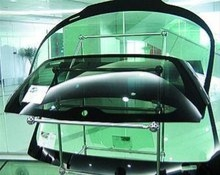

玻璃
玻璃在常温下是一种透明的固体，在熔融时形成连续网络结构，冷却过程中粘度逐渐增大并硬化而不结晶的硅酸盐类非金属材料。普通玻璃的化学组成是Na2O·CaO·6SiO2，主要成分是二氧化硅。广泛应用于建筑物，用来隔风透光，属于混合物。另有混入了某些金属的氧化物或者盐类而显现出颜色的有色玻璃，和通过特殊方法制得的钢化玻璃等。有时把一些透明的塑料(如聚甲基丙烯酸甲酯)也称作有机玻璃。
科技名词定义中文名称：玻璃英文名称：glass定义：熔融后冷却至固态未析晶的无定形物质。应用学科：材料科学技术（一级学科）；无机非金属材料（二级学科）；玻璃（二级学科）
玻璃：一种较为透明的固体物质，在熔融时形成连续网络结构，冷却过程中粘度逐渐增大并硬化而不结晶的硅酸盐类非金属材料。普通玻璃化学氧化物的组成(Na2O·CaO·6SiO2),主要成份是二氧化硅。广泛应用于建筑物，用来隔风透光，属于混合物。
中文名： 玻璃
外文名： glass
属性： 非金属，透明的固体物质
发现： 欧洲腓尼基人
主要成份： 二氧化硅
发展概述
历史来源
最初由火山喷出的酸性岩凝固而得，约公元前3700年前，古埃及人已制出玻璃装饰品和简单玻璃器皿，当时只有有色玻璃。约公元前1000年前，制造出无色玻璃。公元12世纪，出现了商品玻璃，并开始成为工业材料。18世纪，为适应研制望远镜的需要，制出光学玻璃；1874年，比利时首先制出平板玻璃。
1906年，美国制出平板玻璃引上机，此后，随着玻璃生产的工业化和规模化，各种用途和各种性能的玻璃相继问世。现代，玻璃已成为日常生活、生产和科学技术领域的重要材料。
3000多年前，一艘欧洲腓尼基人的商船，满载着晶体矿物“天然苏打”，航行在地中海沿岸的贝鲁斯河上。由于海水落潮，商船搁浅了。于是船员们纷纷登上沙滩。有的船员还抬来大锅，搬来木柴，并用几块“天然苏打”作为大锅的支架，在沙滩上做起饭来。
船员们吃完饭，潮水开始上涨了。他们正准备收拾一下登船继续航行时，突然有人高喊：“大家快来看啊，锅下面的沙地上有一些晶莹明亮、闪闪发光的东西！”
船员们把这些闪烁光芒的东西，带到船上仔细研究起来。他们发现，这些亮晶晶的东西上粘有一些石英砂和融化的天然苏打。原来，这些闪光的东西，是他们做饭时用来做锅的支架的天然苏打，在火焰的作用下，与沙滩上的石英砂发生化学反应而产生的晶体，这就是最早的玻璃。后来腓尼基人把石英砂和天然苏打和在一起，然后用一种特制的炉子熔化，制成玻璃球，使腓尼基人发了一笔大财。玻璃(22张)
大约在4世纪，罗马人开始把玻璃应用在门窗上。到1291年，意大利的玻璃制造技术已经非常发达。
“ 我国的玻璃制造技术决不能泄漏出去，把所有的制造玻璃的工匠都集中在一起生产玻璃！”
就这样，意大利的玻璃工匠都被送到一个与世隔绝的孤岛上生产玻璃，他们在一生当中不准离开这座孤岛。
1688年，一名叫纳夫的人发明了制作大块玻璃的工艺，从此，玻璃成了普通的物品。
几百年来，人们一直认为玻璃是绿色的，是无法改变的。后来发现绿色来自原料中少量的铁，二价铁的化合物使得玻璃显绿色。在加入二氧化锰以后，原来的二价铁变成三价铁显黄色，而四价锰被还原成三价锰呈紫色。光学上，黄色和紫色在一定程度上可以互补，混合在一起成为白光，玻璃就不偏色了。不过若干年后，三价锰被空气继续氧化，紫色会逐渐增强，所以那些古老房屋的窗玻璃会略微带点紫色。
种类及应用
我们使用的玻璃是由石英砂、纯碱、长石及石灰石经高温制成的。熔体在冷却过程中黏度逐渐增大而得的不结晶的固体材料。性脆而透明。有石英玻璃、硅酸盐玻璃、钠钙玻璃、氟化物玻璃、高温玻璃、耐高压玻璃、防紫外线玻璃、防爆玻璃等。通常指硅酸盐玻璃，以石英砂、纯碱、长石及石灰石等为原料，经混和、高温熔融、匀化后，加工成形，再经退火而得
。广泛用于建筑、日用、医疗、化学、电子、仪表、核工程等领域。[1]
产业的发展
玻璃产业的发展起源于欧美国家，近几年来，中国的玻璃企业产能扩张迅速，产能已与美国、德国等国家的产能相当，随着国际玻璃产业逐渐向中国转移以及中国本土企业研发、生产能力的提高，中国在未来几年将成为全球最重要的的玻璃生产基地之一。
玻璃的分类
按生产工艺分类
热熔玻璃：浮雕玻璃、锻打玻璃、晶彩玻璃、琉璃玻璃、夹丝玻璃、聚晶玻璃、玻璃马赛克、钢化玻璃、夹层玻璃、中空玻璃、调光玻璃、发光玻璃。
陈设工艺品这一块越来越多人关注，其中有很大一部分的工艺品造型由玻璃制造。
简单分类
玻璃简单分类主要分为平板玻璃和深加工玻璃。平板玻璃主要分为三种：即引上法平板玻璃(分有槽/无槽两种)、平拉法平板玻璃和浮法玻璃。由于浮法玻璃具有厚度均匀、上下表面平整平行，再加上劳动生产率高及利于管理等方面的因素影响，浮法玻璃正成为玻璃制造方式的主流。而特种玻璃则品种众多，下面按装修中常见的品种一一说明：
一、 普通平板玻璃
1、 3--4厘玻璃， mm在日常中也称为厘。我们所说的3厘玻璃，就是指厚度3mm的玻璃。这种规格的玻璃主要用于画框表面。
2、 5--6厘玻璃，主要用于外墙窗户、门扇等小面积透光造型等等 。
3、 7--9厘玻璃，主要用于室内屏风等较大面积但又有框架保护的造型之中。 平板玻璃图
4、 9--10厘玻璃，可用于室内大面积隔断、栏杆等装修项目。
5、 11--12厘玻璃，可用于地弹簧玻璃门和一些活动人流较大的隔断。
6、 15厘以上玻璃，一般市面上销售较少，往往需要订货，主要用于较大面积的地弹簧玻璃门和外墙整块玻璃墙面。[1]
二、深加工玻璃
为达到生产生活中的各种需求，人们对普通平板玻璃进行深加工处理，主要分类为：
1、 钢化玻璃。它是普通平板玻璃经过再加工处理而成一种预应力玻璃。钢化玻璃相对于普通平板玻璃来说，具有两大特征：
1) 前者强度是后者的数倍，抗拉度是后者的3倍以上，抗冲击是后者5 倍以上。
2) 钢化玻璃不容易破碎，即使破碎也会以无锐角的颗粒形式碎裂，对人体伤害大大降低。
2、 磨砂玻璃。它也是在普通平板玻璃上面再磨砂加工而成。一般厚度多在9厘以下，以5、6厘厚度居多。
3、 喷砂玻璃。性能上基本上与磨砂玻璃相似，不同的改磨砂为喷砂。由于两者视觉上类同，很多业主，甚至装修专业人员都把它们混为一谈。
4、 压花玻璃。是采用压延方法制造的一种平板玻璃。其最大的特点是透光不透明，多使用于洗手间等装修区域。
5、 夹丝玻璃。是采用压延方法，将金属丝或金属网嵌于玻璃板内制成的一种具有抗冲击平板玻璃，受撞击时只会形成辐射状裂纹而不至于堕下伤人。故多采用于高层楼宇和震荡性强的厂房。
6、 中空玻璃。多采用胶接法将两块玻璃保持一定间隔，间隔中是干燥的空气，周边再用密封材料密封而成，主要用于有隔音隔热要求的装修工程之中。
7、 夹层玻璃。夹层玻璃一般由两片普通平板玻璃(也可以是钢化玻璃或其他特殊玻璃)和玻璃之间的有机胶合层构成。当受到破坏时，碎片仍粘附在胶层上，避免了碎片飞溅对人体的伤害。多用于有安全要求的装修项目。
8、 防弹玻璃。实际上就是夹层玻璃的一种，只是构成的玻璃多采用强度较高的钢化玻璃，而且夹层的数量也相对较多。多采用于银行或者豪宅等对安全要求非常高的装修工程之中。
9、 热弯玻璃。由优质平板玻璃加热软化在模具中成型，再经退火制成的曲面玻璃。样式美观，线条流畅，在一些高级装修中出现的频率越来越高。
10、玻璃砖。玻璃砖的制作工艺基本和平板玻璃一样，不同的是成型方法。
其中间为干燥的空气。多用于装饰性项目或者有保温要求的透光造型之 中。
11、玻璃纸。也称玻璃膜，具有多种颜色和花色。根据纸膜的性能不同，具有不同的性能。绝大部分起隔热、防红外线、防紫外线、防爆等作用。
12、LED光电玻璃。光电玻璃是一种新型环保节能产品，是LED和玻璃的结合体，既有玻璃的通透性，又有LED的亮度，主要用于室内外装饰和广告。
13、调光玻璃：通电呈现玻璃本质透明状，断电时呈现白色磨砂状不透明，不透明状态下，可以做为背投幕。
成分分类
玻璃通常按主要成分分为氧化物玻璃和非氧化物玻璃。非氧化物玻璃品种和数量很少，主要有硫系玻璃和卤化物玻璃。硫系玻璃的阴离子多为硫、硒、碲等，可截止短波长光线而通过黄 、红光 ，以及近、远红外光，其电阻低，具有开关与记忆特性。卤化物玻璃的折射率低，色散低，多用作光学玻璃。
氧化物玻璃又分为硅酸盐玻璃、硼酸盐玻璃、磷酸盐玻璃等。硅酸盐玻璃指基本成分为SiO2的玻璃，其品种多 ，用途广。通常按玻璃中SiO2以及碱金属、碱土金属氧化物的不同含量，又分为 ：
①石英玻璃。SiO2含量大于99.5%，热膨胀系数低，耐高温，化学稳定性好，透紫外光和红外光，熔制温度高、粘度大，成型较难。多用于半导体、电光源、光导通信、激光等技术和光学仪器中。
②高硅氧玻璃。SiO2含量约96%，其性质与石英玻璃相似。
③钠钙玻璃。以SiO含量为主，还含有15%的Na2O和16%的 CaO，其成本低廉，易成型，适宜大规模生产，其产量占实用玻璃的90%。可生产玻璃瓶罐、平板玻璃、器皿、灯泡等。
④铅硅酸盐玻璃。主要成分有 SiO2 和 PbO ，具有独特的高折射率和高体积电阻，与金属有良好的浸润性，可用于制造灯泡、真空管芯柱、晶质玻璃器皿、火石光学玻璃等。含有大量 PbO的铅玻璃能阻挡X射线和γ射线。
⑤铝硅酸盐玻璃。以 SiO2和Al2O3为主要成分，软化变形温度高，用于制作放电灯泡、高温玻璃温度计、化学燃烧管和玻璃纤维等。
⑥硼硅酸盐玻璃。以 SiO2和B2O3 为主要成分，具有良好的耐热性和化学稳定性，用以制造烹饪器具、实验室仪器、金属焊封玻璃等。硼酸盐玻璃以 B2O3为主要成分，熔融温度低，可抵抗钠蒸气腐蚀。含稀土元素的硼酸盐玻璃折射率高、色散低，是一种新型光学玻璃。磷酸盐玻璃以 P2O5为主要成分，折射率低、色散低，用于光学仪器中。
（1）普通玻璃（Na2SiO3、CaSiO3、SiO2或Na2O·CaO·6SiO2）
（2）石英玻璃（以纯净的石英为主要原料制成的玻璃，成分仅为SiO2）
（3）钢化玻璃（与普通玻璃成分相同）
（4）钾玻璃（K2O、CaO、SiO2）
（5）硼酸盐玻璃（SiO2、B2O3）
（6）有色玻璃在（普通玻璃制造过程中加入一些金属氧化物。Cu2O——红色；CuO——蓝绿色；CdO——浅黄色；CO2O3——蓝色；Ni2O3——墨绿色；MnO2——紫色；胶体Au——红色；胶体Ag——黄色）
（7）变色玻璃（用稀土元素的氧化物作为着色剂的高级有色玻璃）
（8）光学玻璃（在普通的硼硅酸盐玻璃原料中加入少量对光敏感的物质，如AgCl、AgBr等，再加入极少量的敏化剂，如CuO等，使玻璃对光线变得更加敏感）
（9）彩虹玻璃（在普通玻璃原料中加入大量氟化物、少量的敏化剂和溴化物制成）
（10）防护玻璃（在普通玻璃制造过程加入适当辅助料，使其具有防止强光、强热或辐射线透过而保护人身安全的功能。如灰色——重铬酸盐，氧化铁吸收紫外线和部分可见光；蓝绿色——氧化镍、氧化亚铁吸收红外线和部分可见光；铅玻璃——氧化铅吸收X射线和r射线；暗蓝色——重铬酸盐、氧化亚铁、氧化铁吸收紫外线、红外线和大部分可见光；加入氧化镉和氧化硼吸收中子流。
（11）微晶玻璃（又叫结晶玻璃或玻璃陶瓷，是在普通玻璃中加入金、银、铜等晶核制成，代替不锈钢和宝石，作雷达罩和导弹头等）。
（12）玻璃纤维（由熔融玻璃拉成或吹成的直径为几微米至几千微米的纤维，成分与玻璃相同）
（13）玻璃丝（即长玻璃纤维）
（14）玻璃钢（由环氧树脂与玻璃纤维复合而得到的强度类似钢材的增强塑料）
（15）玻璃纸（用粘胶溶液制成的透明的纤维素薄膜）
（16）水玻璃（Na2SiO3）的水溶液，因与普通玻璃中部分成分相同而得名）
（17）金属玻璃（玻璃态金属，一般由熔融的金属迅速冷却而制得）
（18）萤石（氟石）（无色透明的CaF2，用作光学仪器中的棱镜和透光镜）
性能分类
此外，玻璃按性能特点又分为：钢化玻璃、多孔玻璃(即泡沫玻璃，孔径约40，用于海水淡化、病毒过滤等方面）、导电玻璃(用作电极和飞机风挡玻璃)、微晶玻璃、乳浊玻璃（用于照明器件和装饰物品等）和中空玻璃（用作门窗玻璃）等。
汽车玻璃的分类
[2]汽车夹层玻璃
夹层玻璃是指用一种透明可粘合性塑料膜贴在二层或三层玻璃之间，将塑料的强韧性和玻璃的坚硬性结合在一起，增加了玻璃的抗破碎能力，破碎后仍然能够保持能见度。多用于汽车挡风玻璃。
汽车区域钢化玻璃
区域钢化玻璃是钢化玻璃的一种新品种，它经过特殊处理，能够在受到冲击破裂时，其玻璃的裂纹仍可以保持一定的清晰度，保证驾驶者的视野区域不受影响。多用于汽车挡风玻璃及仪表保护屏。
通性
1.各向同性：均质玻璃在各个方向的性质如折射率、硬度、弹性模量、热膨胀系数等性能相同。
2. 介稳性：当熔体冷却成玻璃体时，它能在较低温度下保留高温时的结构而不变化。
3.可逆渐变性：熔融态向玻璃态转化是可逆和渐变的。
4.连续性：熔融态向玻璃态转变时物理化学性质随温度变化是连续的。
防火玻璃
防火玻璃主要有五种，其一是夹层复合防火玻璃，其二是夹丝防火玻璃，其三是特种防火玻璃，其四是中空防火玻璃，其五是高强度单层铯钾防火玻璃。当然科技是在不断的发展，所以相关的方面也是在不断的改善，不同类别的玻璃它的效用是不一样的，所以其相关的制作工艺以及使用用途是不同的，这是需要我们进行细致化考虑和分析的。
回收处理
由于玻璃的成分主要是二氧化硅，而二氧化硅是很难自然分解的，在自然环境下，需要100万年的时间，所以为了保
护环境，我们要注意使用玻璃制品，要有回收利用的意识，每回收一个玻璃瓶所节省的能量足可以让100瓦的灯泡亮4小时。
玻璃特性
根据种类不同，玻璃有不同的特性。下面按照建筑玻璃分类方法分别介绍如下：
一、镜片玻璃
1、良好的透视、透光性能（3mm、5mm厚的镜片玻璃的可见光透射比分别为87%和84%）。对太阳光中近红外热射线的透过率较高，但对可见光折射至室内墙顶地面和家具、织物而反射产生的远红外长波热射线却有效阻挡，故可产生明显的“暖房效应”。净片玻璃对太阳光中紫外线的透过率较低；
2、隔声、有一定的保温性能；
3、抗拉强度远小于抗压强度，是典型的脆性材料；
4、有较高的化学稳定性，通常情况下，对酸碱盐及化学试剂盒气体都有较强的抵抗能力，但长期遭受侵蚀性介质的作用也能导致变质和破坏，如玻璃的风化和发霉都会导致外观破坏和透光性能降低；
5、热稳定性较差，极冷极热易发生炸裂。
二、装饰玻璃
1、彩色平板玻璃 可以拼成各类团，并有耐腐蚀抗冲刷、易清洗等特点。
2、釉面玻璃具有良好的化学稳定性和装饰性。
3、压花玻璃、喷花玻璃、乳花玻璃、刻花玻璃、冰花玻璃根据各自制作花纹的工艺不同，有各种色彩、观感、光泽效果，富有装饰性。
三、安全玻璃
1、钢化玻璃 机械强度高、弹性好、热稳定性好、碎后不易伤人、可发生自爆。
2、夹丝玻璃 受冲击或温度骤变后碎片不会飞散；可短时防止火焰蔓延；有一定的防盗、防抢作用。
3、夹层玻璃 透明度好、抗冲击性能高、夹层PVB胶片粘合作用保护碎片不散落伤人，耐久、耐热、耐湿、耐寒性高。
四、节能装饰性玻璃
1、着色玻璃 有效吸收太阳辐射热，达到蔽热节能效果；吸收较多可见光，使透过的光线柔和；较强吸收紫外线，防止紫外线对室内影响；色泽艳丽耐久，增加建筑物外形美观。
2、镀膜玻璃 保温隔热效果较好，易对外面环境产生光污染。
{kind=link}
{kind=link}
{kind=link}
{kind=link}